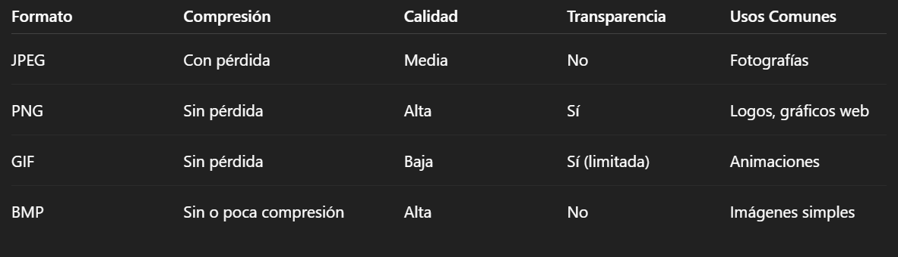

Introducción
Los formatos de imagen son tipos de archivos que determinan cómo se almacenan y muestran los datos de una imagen. Cada formato tiene sus propias características únicas que los hacen adecuados para diferentes situaciones como por ejemplo los GIFS pueden almacenar imagenes animadas. Las diferentes características que tienen son los datos de color de cada píxel, la resolución, la compresión y los Metadatos (como el nombre del autor, la fecha, etc.) Los formatos se dividen principalmente en dos tipos: rasterizados (basados en píxeles) y vectoriales (basados en fórmulas matemáticas).
Los diferentes formatos son:
JPG o JPEG:
- Muy usado para fotos.
- Ocupa poco espacio.
- Pierde un poco de calidad cada vez que se guarda.
- No permite fondo transparente.
PNG:
- Muy buena calidad.
- Permite fondo transparente.
- Ocupa más espacio que JPG.
- Ideal para logos o dibujos.
GIF:
- Se puede animar (como los memes que se mueven).
- Tiene pocos colores.
- Bueno para cosas simples, como iconos o animaciones cortas.
BMP:
- Muy buena calidad.
- Ocupa mucho espacio.
- Ya casi no se usa porque hay opciones mejores.
TIFF:
- Alta calidad.
- Se usa en fotografía profesional o impresión.
- Archivos muy grandes.
A continuación una tabla donde aparece la comparación de cada formato de imagen:
